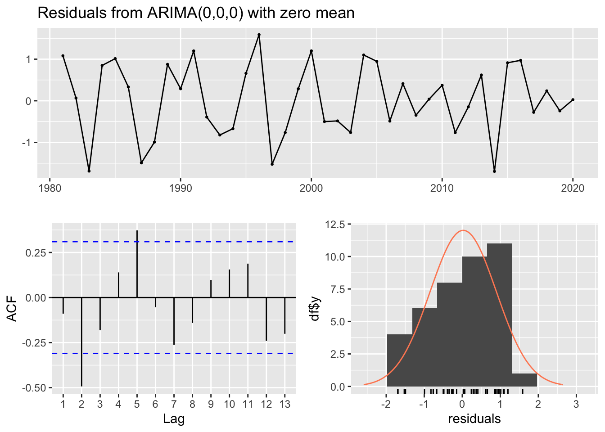

Our group decided to compare how accurate the forecasts of best fit ARIMA models were for the populations of 4 year old salmon (1.3 and 2.2 age groups) were in the Wood, Kvichak, and Ugashik regions of the Bristol Bay data. Our questions were the following:
What kind of ARIMA model best fits the population in each chosen region and age group of sockeye salmon?
Which populations of salmon can be better forecast using ARIMA modeling? Those that have spent 2 years in the ocean or 3?
Is there regional variation in the population changes of 4-year-old salmon?
Method you will use
We will fit ARIMA models to each region and age group and compare the model structures. Then compare the forecast results of each model and comment on the accuracy of each.
Initial plan
Using the forecast package, we plan to fit ARIMA models to the 1960-2010 data on 4 yr old fish in the Wood and Ugashik systems. Then forecast to 2020. We will separate the fish by time spent in freshwater and time in the ocean. These age groups are labeled 1.3 (1 year in freshwater, 3 years in the ocean) and 2.2 (2 years in freshwater, 2 years in the ocean). We will measure accuracy by the comparing the RMS error of each model.
What you actually did
We were able to enact our plan with a few modifications. Instead of modeling all the 4 year old salmon together, we separated and compared them by age group from the outset. Additionally, we added the Kvichak region to our analysis. We also examined the accuracy of the forecast if we removed the years prior to 1980 from the training data for the 1.3 age group in the Ugashik river. We did this as there was increased variance in the observed data if we included 1960 - 1980. We thought that removing the variance may improve the accuracy of the forecast, so we fit a second model to the data starting at the year 1980 and compared its forecast to the original model’s.
Diagnostics and preliminary exploration
Plot the data
Ugashik Region
Code
age1.3=1.3age2.2=2.2#Create a dataframe for the 1.3 age groupUgashik_1.3<- bb_data %>%filter(system==rivers[7]) %>%filter(age_group == age1.3) %>%mutate(year = ret_yr) %>%select(year, log_ret) #Create a dataframe for the 2.2 age groupUgashik_2.2<- bb_data %>%filter(system==rivers[7]) %>%filter(age_group == age2.2) %>%mutate(year = ret_yr) %>%select(year, log_ret)#Create the time seriesUgashik_1.3.ts <-ts(Ugashik_1.3$log_ret, start=Ugashik_1.3$year[1]) # time series 1.3 fish Ugashik_1.3.ts_out <-window(Ugashik_1.3.ts, start=1980, end =2020) # time series 1.3 fish starting from 1980 Ugashik_2.2.ts <-ts(Ugashik_2.2$log_ret, start=Ugashik_2.2$year[1]) # time series 2.2 fishplot.ts(Ugashik_1.3.ts, ylab ="Log abundance", main ="Ugashik Sockeye: 1 yr freshwater, 3 yrs ocean")
Code
plot.ts(Ugashik_1.3.ts_out, ylab ="Log abundance", main ="Ugashik Sockeye: 1 yr freshwater, 3 yrs ocean\n1980 - 2020")
wood_dt <- bb_data[(bb_data$system == rivers[2]) & (bb_data$full_age ==4),]#unique(wood_dt$o_age)#split the dataframe by years in the oceanWood_1.3<- wood_dt[wood_dt$o_age==3,]Wood_2.2<- wood_dt[wood_dt$o_age==2,]#make them time seriesWood_1.3.ts <-ts(Wood_1.3$log_ret, start =1963, frequency =1)Wood_2.2.ts <-ts(Wood_2.2$log_ret, start =1963, frequency =1)#check the plotplot.ts(Wood_1.3.ts, ylab ="log Abundance", main ="Wood Sockeye: 1 yr freshwater, 3 yrs ocean" )
Code
#looks like there is a positive trend to the data: not stationary, or could be stationary around a trendplot.ts(Wood_2.2.ts, ylab ="log Abundance", main ="Wood Sockeye: 2 yrs freshwater, 2 yrs ocean" )
Kvichak Region
Code
Kvichak_dt <- bb_data[(bb_data$system == rivers[4]) & (bb_data$full_age ==4),]#unique(Kvichak_dt$o_age)Kvichak_1.3<- Kvichak_dt[Kvichak_dt$o_age ==3,]Kvichak_2.2<- Kvichak_dt[Kvichak_dt$o_age ==2,]#make the tsKvichak_1.3.ts <-ts(Kvichak_1.3$log_ret, start =1963, end =2020)Kvichak_2.2.ts <-ts(Kvichak_2.2$log_ret, start =1963, end =2020)#plotsplot(Kvichak_1.3.ts, ylab ="log Abundance", main ="Kvichak Sockeye: 1 yr freshwater, 3 yrs ocean" )
Uvashik: Upon observing the 1.3 time series, there is a clear outlier value at 1977. To remove the negative value, we re-plotted the data starting at 1980 instead of 1967. The new time series seems to show variance around a mean of 7. The 2.2 group appears to show variance around a mean of 5. Differencing the data will likely show stationarity
Wood: The 1.3 age group appears to have a positive trend, so it is likely not stationary. It could be stationary around a trend. The 2.2 age group does not seem to have any trends, and could be stationary around a mean of 4.
Kvichak: There is another negative outlier in the 1.3 age group, otherwise the data appears to be stationary around a mean of 7. We will have to see how much influence the outlier has on the ARIMA model. The 2.2 age group does not show any obvious trends and seems to be stationary around a mean of 7.
Testing for Stationarity
Ugashik
Code
#Miranda's Codetseries::adf.test(Ugashik_1.3.ts)
Augmented Dickey-Fuller Test
data: Ugashik_1.3.ts
Dickey-Fuller = -3.1174, Lag order = 3, p-value = 0.1236
alternative hypothesis: stationary
Code
tseries::kpss.test(Ugashik_1.3.ts, null ="Level")
KPSS Test for Level Stationarity
data: Ugashik_1.3.ts
KPSS Level = 0.54744, Truncation lag parameter = 3, p-value = 0.03098
Code
tseries::kpss.test(Ugashik_1.3.ts, null ="Trend")
Warning in tseries::kpss.test(Ugashik_1.3.ts, null = "Trend"): p-value greater
than printed p-value
KPSS Test for Trend Stationarity
data: Ugashik_1.3.ts
KPSS Trend = 0.075997, Truncation lag parameter = 3, p-value = 0.1
Warning in tseries::kpss.test(Ugashik_1.3.ts_out, null = "Trend"): p-value
greater than printed p-value
KPSS Test for Trend Stationarity
data: Ugashik_1.3.ts_out
KPSS Trend = 0.065518, Truncation lag parameter = 3, p-value = 0.1
Code
datts_diff_1.3_out <-diff(Ugashik_1.3.ts_out, differences =1)plot(datts_diff_1.3, ylab ="Log abundance", main ="Time series, first differenced:\n 1 year freshwater, 3 years ocean")
Code
plot(datts_diff_1.3_out, ylab ="Log abundance", main ="Time series, first differenced:\n 1 year freshwater, 3 years ocean, outlier removed")
Code
tseries::adf.test(Ugashik_2.2.ts)
Augmented Dickey-Fuller Test
data: Ugashik_2.2.ts
Dickey-Fuller = -2.0383, Lag order = 3, p-value = 0.5592
alternative hypothesis: stationary
Code
tseries::kpss.test(Ugashik_2.2.ts, null ="Level")
Warning in tseries::kpss.test(Ugashik_2.2.ts, null = "Level"): p-value greater
than printed p-value
KPSS Test for Level Stationarity
data: Ugashik_2.2.ts
KPSS Level = 0.21297, Truncation lag parameter = 3, p-value = 0.1
Code
tseries::kpss.test(Ugashik_2.2.ts, null ="Trend")
KPSS Test for Trend Stationarity
data: Ugashik_2.2.ts
KPSS Trend = 0.184, Truncation lag parameter = 3, p-value = 0.022
Code
datts_diff_2.2<-diff(Ugashik_2.2.ts, differences =1)plot(datts_diff_2.2, ylab ="Log abundance", main ="Time series, first differenced:\n 2 years freshwater, 2 years ocean")
Stationairity test for the full Ugashik 1.3 group were in disagreement indicating that a single difference should be taken to get them to agree on stationairity. The same is true for the 2.2 group, we again see disagreement in the tests. The truncated dataset of the 1.3 group shows full agreement on non-stationairity. Thus a first difference needs to be taken on all of them.
Wood
Code
#Dylan's Code#Wood_1.3.ts testing#run tests for stationaritytseries::adf.test(Wood_1.3.ts) # fails to reject: Non-stationary
Augmented Dickey-Fuller Test
data: Wood_1.3.ts
Dickey-Fuller = -3.1466, Lag order = 3, p-value = 0.1118
alternative hypothesis: stationary
Code
tseries::adf.test(Wood_1.3.ts,k =0) #forced it to test AR(1) it does reject: Stationary. So conflicts with the test above
Warning in tseries::adf.test(Wood_1.3.ts, k = 0): p-value smaller than printed
p-value
Augmented Dickey-Fuller Test
data: Wood_1.3.ts
Dickey-Fuller = -6.5462, Lag order = 0, p-value = 0.01
alternative hypothesis: stationary
Code
tseries::kpss.test(Wood_1.3.ts, null ="Level") #not sure this test makes sense, visually there is a trend in the data. opposite null hypothesis for kpss it rejects: Non-stationary
Warning in tseries::kpss.test(Wood_1.3.ts, null = "Level"): p-value smaller
than printed p-value
KPSS Test for Level Stationarity
data: Wood_1.3.ts
KPSS Level = 1.1774, Truncation lag parameter = 3, p-value = 0.01
Code
tseries::kpss.test(Wood_1.3.ts, null ="Trend") #this tested to see if data is stationary around a trend
KPSS Test for Trend Stationarity
data: Wood_1.3.ts
KPSS Trend = 0.14659, Truncation lag parameter = 3, p-value = 0.04951
Code
forecast::ndiffs(Wood_1.3.ts, test ="kpss") # 1 difference needed
[1] 1
Code
forecast::ndiffs(Wood_1.3.ts, test ="adf") # 0 differences needed, again disagreement. Likely will need a difference but we can compare to the ARIMA model that gets automatically fit
Augmented Dickey-Fuller Test
data: Wood_2.2.ts
Dickey-Fuller = -3.7358, Lag order = 3, p-value = 0.02957
alternative hypothesis: stationary
Code
tseries::adf.test(Wood_2.2.ts,k =0) #forced it to test AR(1) it does reject: Stationary
Warning in tseries::adf.test(Wood_2.2.ts, k = 0): p-value smaller than printed
p-value
Augmented Dickey-Fuller Test
data: Wood_2.2.ts
Dickey-Fuller = -7.91, Lag order = 0, p-value = 0.01
alternative hypothesis: stationary
Code
tseries::kpss.test(Wood_2.2.ts, null ="Level") #opposite null hypothesis for kpss it fails to reject: Stationary
Warning in tseries::kpss.test(Wood_2.2.ts, null = "Level"): p-value greater
than printed p-value
KPSS Test for Level Stationarity
data: Wood_2.2.ts
KPSS Level = 0.076509, Truncation lag parameter = 3, p-value = 0.1
Code
tseries::kpss.test(Wood_2.2.ts, null ="Trend")
Warning in tseries::kpss.test(Wood_2.2.ts, null = "Trend"): p-value greater
than printed p-value
KPSS Test for Trend Stationarity
data: Wood_2.2.ts
KPSS Trend = 0.058765, Truncation lag parameter = 3, p-value = 0.1
Code
forecast::ndiffs(Wood_2.2.ts, test ="kpss") # 0 needed
[1] 0
Code
forecast::ndiffs(Wood_2.2.ts, test ="adf") # 0 needed. Agrees with the unit root tests above that found stationairity of the data
[1] 0
The Wood River 1.3 showed disagreement in the outcome of the stationairity tests this indicates that a difference is required to reach stationairity. The ndiff() function disagrees based on test used but the kpss test indicates a single differencing is required. In contrast the Wood River 2.2 group has full agreement from all tests for stationairity. The ndiff() function also indicates that no differencing is required for this dataset.
Kvichak
Code
#test stationairity Kvichak_1.3tseries::adf.test(Kvichak_1.3.ts) # Rejects just barely: stationary
Augmented Dickey-Fuller Test
data: Kvichak_1.3.ts
Dickey-Fuller = -3.5126, Lag order = 3, p-value = 0.04835
alternative hypothesis: stationary
Code
tseries::adf.test(Kvichak_1.3.ts,k =0) #forced it to test AR(1) it does reject: Stationary.
Warning in tseries::adf.test(Kvichak_1.3.ts, k = 0): p-value smaller than
printed p-value
Augmented Dickey-Fuller Test
data: Kvichak_1.3.ts
Dickey-Fuller = -7.0898, Lag order = 0, p-value = 0.01
alternative hypothesis: stationary
Code
tseries::kpss.test(Kvichak_1.3.ts, null ="Level") #opposite null hypothesis for kpss it rejects: non-Stationary
Warning in tseries::kpss.test(Kvichak_1.3.ts, null = "Level"): p-value smaller
than printed p-value
KPSS Test for Level Stationarity
data: Kvichak_1.3.ts
KPSS Level = 0.87527, Truncation lag parameter = 3, p-value = 0.01
KPSS Test for Trend Stationarity
data: Kvichak_1.3.ts
KPSS Trend = 0.16823, Truncation lag parameter = 3, p-value = 0.03147
Code
forecast::ndiffs(Kvichak_1.3.ts, test ="kpss") # 1 needed
[1] 1
Code
forecast::ndiffs(Kvichak_1.3.ts, test ="adf") #0 needed. again disagreement. likely will be differenced by auto.arima()
[1] 0
Code
#there is disagreement from adf and kpss, may require differencing
Code
#test stationairity Kvichak_2.2tseries::adf.test(Kvichak_2.2.ts) # fails to Reject: non-stationary
Augmented Dickey-Fuller Test
data: Kvichak_2.2.ts
Dickey-Fuller = -3.0401, Lag order = 3, p-value = 0.1548
alternative hypothesis: stationary
Code
tseries::adf.test(Kvichak_2.2.ts,k =0) #forced it to test AR(1) it does reject: Stationary. disagreement between them
Warning in tseries::adf.test(Kvichak_2.2.ts, k = 0): p-value smaller than
printed p-value
Augmented Dickey-Fuller Test
data: Kvichak_2.2.ts
Dickey-Fuller = -5.4257, Lag order = 0, p-value = 0.01
alternative hypothesis: stationary
Code
tseries::kpss.test(Kvichak_2.2.ts, null ="Level") #opposite null hypothesis for kpss it fails to reject: Stationary
Warning in tseries::kpss.test(Kvichak_2.2.ts, null = "Level"): p-value greater
than printed p-value
KPSS Test for Level Stationarity
data: Kvichak_2.2.ts
KPSS Level = 0.33673, Truncation lag parameter = 3, p-value = 0.1
Code
tseries::kpss.test(Kvichak_2.2.ts, null ="Trend")
Warning in tseries::kpss.test(Kvichak_2.2.ts, null = "Trend"): p-value greater
than printed p-value
KPSS Test for Trend Stationarity
data: Kvichak_2.2.ts
KPSS Trend = 0.08168, Truncation lag parameter = 3, p-value = 0.1
Code
#there is disagreement from adf and kpss, may require differencingforecast::ndiffs(Kvichak_2.2.ts, test ="kpss") # 0 needed
[1] 0
Code
forecast::ndiffs(Kvichak_2.2.ts, test ="adf") # 0 needed. So I am expecting this to be an AR(1) as the full adf test was the only one to say non-stationary
[1] 0
The Kvichak 1.3 group showed disagreement between stationairity tests indicating that a differencing is needed. The ndiff() function also disagrees but that is a reflection of the difference between the results of the adf and kpss stationairity tests. A single difference is needed to get the tests into agreement. The Kvichak 2.2 group shows an interesting disagreement between the two adf tests and ndiff() is in agreement that no differencing is needed to reach stationairity which is interesting because the adf and kpss tests were in disagreement as well. We will examine the ACF and PACF plots of both a differenced and non-differenced Kvichak 2.2 group.
ACF and PACF
Ugashik
Code
layout_matrix_1 <-matrix(c(1,2),ncol=2) #setting up how the plots will displaylayout(layout_matrix_1) acf(diff(Ugashik_1.3.ts))pacf(diff(Ugashik_1.3.ts))
Code
layout(layout_matrix_1) #setting up how the plots will displayacf(diff(Ugashik_1.3.ts_out), na.action = na.pass) # allows na valuepacf(diff(Ugashik_1.3.ts_out),na.action = na.pass)
Code
layout(layout_matrix_1) #setting up how the plots will displayacf(diff(Ugashik_2.2.ts))pacf(diff(Ugashik_2.2.ts))
Ugashik:
The PACF plot of the full differenced 1.3 age group tails off slowly, which indicates an MA() model. The ACF cuts off at 1, which further reinforces idea that this is an MA(1) model.
The truncated 1.3 group shows significance at a lag of 2 for both the ACF and a slow decay for the PACF. This again indicates that it will be an MA() model of MA(2)
The 2.2 age group has an ACF that looks like it may not have any significant lags besides the one at 5 which we are taking to indicate a cyclic nature to the data which again we will ignore in this experiment. The PACF looks to be a slow decline again. The model selection is a little more unclear in these plots.
Wood
Code
#acf and pacf for differenced Wood_1.3layout(layout_matrix_1) #setting up how the plots will displayacf(diff(Wood_1.3.ts))pacf(diff(Wood_1.3.ts))
Code
#pacf looks like a slow decay indicating it will be and MA model. signif lags at 1, 5, 10 on ACF
Code
#acf and pacf for Wood_2.2#carries the plot display set up from the above over to these plotslayout(layout_matrix_1) #setting up how the plots will displayacf(Wood_2.2.ts)pacf(Wood_2.2.ts)
Code
#no significant lags in either plot. This is white noise, no autocorrelation. expecting ARIMA(0,0,0)
Wood:
ACF for the 1.3 data seems to cut off at 2. It also shows significance at lags of 5 and 10 which may indicate seasonality. The PACF appears to slowly taper off. This is likely an MA() model
The 2.2 age group does not show significance in either plot, so this is most likely white noise already.
Kvichak
Code
layout(layout_matrix_1) #setting up how the plots will displayacf(Kvichak_1.3.ts)pacf(Kvichak_1.3.ts)
Code
#both have a significant lag at 1. maybe just a differencing will help
Code
layout(layout_matrix_1) #setting up how the plots will displayacf(diff(Kvichak_1.3.ts))pacf(diff(Kvichak_1.3.ts))
Code
#looks like slow decay on pacf and a significant lag at 1 on acf. expecting an ARIMA(0,1,1)
Code
#plot acf and pacflayout(layout_matrix_1)acf(Kvichak_2.2.ts)pacf(Kvichak_2.2.ts)
Code
#neither shows any clear lag or decay signs. maybe an combined ARMA model
Kvichak:
The ACF and PACF for the 1.3 group both showed a barely significant lag at 1. The stationairity tests for this dataset were in disagreement so we will look to see what differencing does. After differencing the ACF cuts off at 1 and the PACF seems to slowly taper. This data may be an ARIMA(0,1,1).
The 2.2 group does not show any patterns that line up with an AR or MA model. It may be an ARMA model of some sort.
Ljung-Box test
data: Residuals from ARIMA(0,0,1) with zero mean
Q* = 4.5946, df = 9, p-value = 0.8681
Model df: 1. Total lags used: 10
Code
forecast::checkresiduals(fit.ugashik_1.3_out)

Ljung-Box test
data: Residuals from ARIMA(0,0,0) with zero mean
Q* = 24.804, df = 8, p-value = 0.001678
Model df: 0. Total lags used: 8
Code
forecast::checkresiduals(fit.ugashik_2.2)
Ljung-Box test
data: Residuals from ARIMA(0,0,2) with zero mean
Q* = 12.936, df = 8, p-value = 0.1141
Model df: 2. Total lags used: 10
The Box tests for the residuals from the fitted models of Ugashik only reject the null hypothesis of non-autocorrelation for the truncated data. This may be a result of the cyclic nature of the salmon data. Tests for the full 1.3 and 2.2 datasets are good as they do not indicate autocorrelation in the residuals.
Ljung-Box test
data: Residuals from ARIMA(0,1,1) with drift
Q* = 14.665, df = 9, p-value = 0.1006
Model df: 1. Total lags used: 10
Code
forecast::checkresiduals(fit.wood_2.2)
Ljung-Box test
data: Residuals from ARIMA(0,0,0) with non-zero mean
Q* = 9.6642, df = 10, p-value = 0.4704
Model df: 0. Total lags used: 10
Both fitted models for the Wood River datasets pass the residuals check. Both fail to reject the null hypothesis of non-auto correlated residuals. Indicating the residuals are white noise.
Ljung-Box test
data: Residuals from ARIMA(0,1,1) with drift
Q* = 2.4224, df = 9, p-value = 0.9829
Model df: 1. Total lags used: 10
Code
forecast::checkresiduals(fit.kvi.2)
Ljung-Box test
data: Residuals from ARIMA(0,0,1) with non-zero mean
Q* = 32.184, df = 9, p-value = 0.0001851
Model df: 1. Total lags used: 10
The fitted model for the 1.3 dataset does fail to reject the null hypothesis of non-autocorrelation indicating the residuals are white noise. In contrast, the fitted model for the 2.2 dataset does reject the null hypothesis of non-autocorrelation. This is likely another reflection of the cyclic nature of the data.
Fit Models to the training data
Ugashik
Code
# Make dataframes for testing models latertrain_Ugashik_1.3<-window(Ugashik_1.3.ts, 1963, 2010) # range 1963 - 2010test_Ugashik_1.3<-window(Ugashik_1.3.ts, 2011, 2020) # range 2011 - 2020train_Ugashik_1.3_out <-window(Ugashik_1.3.ts_out, 1980, 2010) # range 1963 - 2010test_Ugashik_1.3_out <-window(Ugashik_1.3.ts_out, 2011, 2020) # range 2011 - 2020train_Ugashik_2.2<-window(Ugashik_2.2.ts, 1963, 2010) # range 1963 - 2010test_Ugashik_2.2<-window(Ugashik_2.2.ts, 2011, 2020) # range 2011 - 2020model_Ugashik_1.3<-auto.arima(train_Ugashik_1.3)model_Ugashik_1.3
Series: train_Ugashik_2.2
ARIMA(1,0,0) with non-zero mean
Coefficients:
ar1 mean
0.4545 5.9958
s.e. 0.1268 0.3373
sigma^2 = 1.753: log likelihood = -80.67
AIC=167.34 AICc=167.88 BIC=172.95
Wood
Code
#Dylan's Code, need to speak on auto.arima model results#creating the training and testing periods for modelstrain.Wood_1.3<-window(Wood_1.3.ts, start =1963, end =2010)test.Wood_1.3<-window(Wood_1.3.ts, start =2011, end =2020)fit.Wood_1.3<-auto.arima(train.Wood_1.3)fit.Wood_1.3
train.Wood_2.2<-window(Wood_2.2.ts, start =1963, end =2010)test.Wood_2.2<-window(Wood_2.2.ts, start =2011, end =2020)fit.Wood_2.2<-auto.arima(train.Wood_2.2)fit.Wood_2.2
Series: train.Wood_2.2
ARIMA(0,0,0) with non-zero mean
Coefficients:
mean
4.6370
s.e. 0.1742
sigma^2 = 1.488: log likelihood = -77.14
AIC=158.29 AICc=158.56 BIC=162.03
Kvichak
Code
#train and test predictionstrain.Kvichak_1.3<-window(Kvichak_1.3.ts, start=1963, end=2010)test.Kvichak_1.3<-window(Kvichak_1.3.ts, start=2011, end=2020) fit.Kvichak_1.3<- forecast::auto.arima(train.Kvichak_1.3)fit.Kvichak_1.3
Series: train.Kvichak_2.2
ARIMA(0,0,1) with non-zero mean
Coefficients:
ma1 mean
0.3950 7.4654
s.e. 0.1391 0.3395
sigma^2 = 3.002: log likelihood = -93.56
AIC=193.11 AICc=193.66 BIC=198.73
Results
Plotting Best Fit Results and Determining Model Accuracy
Ugashik 1.3, Starting from 1980
Code
#Miranda's Codefc_1.3<-forecast(model_Ugashik_1.3_out, h=10)plot.ts(Ugashik_1.3.ts) # check fit of model train on data from 1980 onlines(fitted(model_Ugashik_1.3_out), col="blue") #model seems to fit well
ME RMSE MAE MPE MAPE MASE
Training set 0.003492142 0.5741439 0.4709198 -0.6636186 6.883224 0.6078635
Test set 0.212738213 0.6585916 0.5680040 2.2757596 8.236443 0.7331798
ACF1 Theil's U
Training set -0.03470095 NA
Test set 0.09450154 0.877926
The model itself seems to fit the data well based on the visual fit and the residuals.
The model forecast centers around the mean of the train data, predicting that 2010 will drop which fits the first few actual data points well, but doesn’t do as good of a job of predicting that the data from 2015-2020 look closer to the more recent years than further out (prior to 2005). Data are included in the confidence interval though which is great.
ME RMSE MAE MPE MAPE MASE
Training set -0.001068187 1.295973 1.0706311 -6.326379 21.04040 0.8937811
Test set -0.314622455 1.051713 0.7971697 -9.454614 16.49798 0.6654909
ACF1 Theil's U
Training set -0.01828833 NA
Test set 0.31998321 0.9446332
The model fits the timeseries train data pretty well, matching the overall change in curve. The residuals show the ACF plot has 1 significant lag reflecting the ARIMA (1,0,0) model, the histogram is fairly centered as expected, and model fails to reject Ljung-Box test.
Model forecast doesn’t look great. The forecast flatlines while the real data from 2011-2020 have much higher variance. This reflects the high AICc from the model. But the data are contained within the predicted confidence interval which is good. ### Wood 2.2
Code
pred.Wood_2.2<-forecast(fit.Wood_2.2, h =10)plot(pred.Wood_2.2,ylab ="log Abundance", xlab ="Time")points(test.Wood_2.2, pch=19, col="red")lines(fitted(fit.Wood_2.2), col="blue")
Code
#the actual observations do fall within the 80% prediction interval#This data is treated as white noise with the ARIMA(0,0,0) model so #I imagine the prediction intervals are tied very closely to the variance #of the residuals themselves.forecast::checkresiduals(fit.Wood_2.2)
Ljung-Box test
data: Residuals from ARIMA(0,0,0) with non-zero mean
Q* = 9.263, df = 10, p-value = 0.5073
Model df: 0. Total lags used: 10
Code
accuracy(forecast(fit.Wood_2.2, h =10), test.Wood_2.2)
ME RMSE MAE MPE MAPE MASE
Training set 2.309264e-14 1.2071244 0.9243868 -13.5400802 29.21208 0.6715881
Test set 8.382150e-02 0.7310041 0.6710780 -0.6671193 14.53788 0.4875535
ACF1 Theil's U
Training set -0.06265894 NA
Test set -0.33015036 0.6419835
Code
#the RMSE done manually matches with the RMSE value that is found by the #model in row 2, column 2. This must be how the model does when compared to the #test data. So we have RMSE = 0.731
The model fit the training data well as indicated by the Box test’s failure to reject the null hypothesis. The actual observations do fall within the 80% prediction interval This data is treated as white noise with the ARIMA(0,0,0) model so we predict the prediction intervals are tied very closely to the variance of the residuals themselves.The RMSE = 0.731
Wood 1.3
Code
pred.Wood_1.3<-forecast(fit.Wood_1.3, h =10)plot(pred.Wood_1.3,ylab ="log Abundance", xlab ="Time")points(test.Wood_1.3, pch=19, col="red")lines(fitted(fit.Wood_1.3), col="blue")
Code
#we see that the prediction intervals widen as the forecast moves forward#likely due to the autocorrelation of the errors, because this is an MA(1) model,#which the model has to estimate with each successive prediction. The fitted points#are a flat line again because this is an MA(1) model, we would write the model as# Xt = Xt-1 + error. When we fitted a model to the entire dataset, auto.arima() #selected an ARIMA(0,1,1) with drift, however with just the training data auto.arima() #selected an ARIMA(0,1,1) because the model does not have drift, the predictions stay as a flat line# rather than having a trend.#residuals.3 <- test.Wood_1.3[1:10] - pred.Wood_1.3$mean[1:10]#sqrt(mean(residuals.3^2))forecast::checkresiduals(fit.Wood_1.3)
Ljung-Box test
data: Residuals from ARIMA(0,1,1)
Q* = 12.184, df = 9, p-value = 0.2032
Model df: 1. Total lags used: 10
Code
accuracy(forecast(fit.Wood_1.3, h =10), test.Wood_1.3)
ME RMSE MAE MPE MAPE MASE
Training set 0.1476159 0.5776702 0.4685250 1.486566 6.564567 0.8028471
Test set -0.4034734 0.5321656 0.4363825 -5.476881 5.876250 0.7477688
ACF1 Theil's U
Training set -0.1061270 NA
Test set -0.1945305 1.02589
Code
#the Root Mean Squared Error for this model is 0.532. This value is less#than the value for the Wood_2.2 model. This is a bit surprising as they both#put a straight line on the graph for predictions. These values indicate that #the model for wood.3 was more accurate. The returns of fish that spent less time in fresh#water and longer in the ocean were more accurately predicted than of the fish who spent#two years in both freshwater and the ocean.
Again we see that the model fit the training dataset well. The box test fails to reject the null hypotheis. We see that the prediction intervals widen as the forecast moves forward likely due to the autocorrelation of the errors, because this is an MA(1) model, which the model has to estimate with each successive prediction. The fitted points are a flat line again because this is an MA(1) model, we would write the model as Xt = Xt-1 + error. When we fitted a model to the entire dataset, auto.arima() selected an ARIMA(0,1,1) with drift, however with just the training data auto.arima() selected an ARIMA(0,1,1) because the model does not have drift, the predictions stay as a flat line rather than having a trend.
the Root Mean Squared Error for this model is 0.532. This value is less than the value for the Wood_2.2 model. This is a bit surprising as they both put a straight line on the graph for predictions. These values indicate that the model for wood_1.3 was more accurate at predicting future observations. The returns of fish that spent less time in fresh water and longer in the ocean were more accurately predicted than of the fish who spent two years in both freshwater and the ocean.
Kvichak 2.2
Code
pred.kvi2 <-forecast(fit.Kvichak_2.2, h=10)plot(pred.kvi2,ylab="log Abundance", xlab ="Time")points(test.Kvichak_2.2, pch=19, col ="red")lines(fitted(fit.Kvichak_2.2), col="blue")
Code
forecast::checkresiduals(fit.Kvichak_2.2)
Ljung-Box test
data: Residuals from ARIMA(0,0,1) with non-zero mean
Q* = 36.296, df = 9, p-value = 3.513e-05
Model df: 1. Total lags used: 10
Code
accuracy(pred.kvi2, test.Kvichak_2.2)
ME RMSE MAE MPE MAPE MASE
Training set 0.008535118 1.696210 1.414096 -6.374419 21.61987 0.8022279
Test set -0.649087674 2.088137 1.751880 -21.121893 33.24484 0.9938554
ACF1 Theil's U
Training set -0.02884552 NA
Test set 0.65396329 1.93424
Code
#
Here we see the cyclic nature of the data reflected in the residual’s ACF plot and the rejection of the Box test. This may have affected the model’s ability to predict. The RMSE = 2.088. The actual data points fell outside of the prediction intervals with this model. We observe the same straight line provided by the MA() model but there was more variance in this data which corresponds to the poor prediction performance ### Kvichak 1.3
Code
#chooses same exact model as the full dataset modelpred.kvi3 <-forecast(fit.Kvichak_1.3, h=10)plot(pred.kvi3, ylab="log Abundance", xlab ="Time")points(test.Kvichak_1.3, pch=19, col ="red" ) lines(fitted(fit.Kvichak_1.3), col="blue")
Code
forecast::checkresiduals(fit.Kvichak_1.3)
Ljung-Box test
data: Residuals from ARIMA(0,1,1) with drift
Q* = 1.9103, df = 9, p-value = 0.9928
Model df: 1. Total lags used: 10
Code
accuracy(pred.kvi3, test.Kvichak_1.3)
ME RMSE MAE MPE MAPE MASE
Training set 0.1613506 2.397324 1.399125 7.802140 22.591779 0.9296851
Test set -0.4366868 0.650266 0.553364 -5.920379 7.288404 0.3676971
ACF1 Theil's U
Training set -0.0007066869 NA
Test set -0.4030463679 0.7920795
Code
#
The model fit the training data well again based on the failure to reject the Box test and did a good job forecasting future observation. The RMSE = 0.65 for this forecast’s accuracy, we see the prediction line with a positive trend which results because the model is ARIMA(0,1,1) with drift. Due to the smaller amount of variance in this data set the points fall much closer to the straight line prediction. Again we see that returns for fish that spent longer in the ocean were more accurately predicted in this system.
Discussion
We examined if fish which spent longer in the ocean were more or less predictable than fish of the same age which spent less time in the ocean. We found in the Wood and Kvichak systems that models trained on data for four year old fish which spent longer in the ocean (3 years vs 2 years) made more accurate forecasts as indicated by smaller RMSE values.
The predictions for the Wood and Kvichak systems were straight line predictions as the models that were selected either only had a MA component or, in the case of the Wood 2.2 age group where the observations were considered white noise already, had neither and AR or MA component. In the Ugashik system, the models fitted both had AR components and thus we see the predicted mean line has a bit of structure to it as each prediction relies on the value of the previous prediction.
We found that in the Ugashik system, removing the data prior to 1980 to remove increased variance in the data improved predictions from the model. This could be a good step to investigate doing for the other river systems as well which also show some unusual activity prior to 1980.
Description of each team member’s contributions
Dylan wrote the code for the Wood and Kvichak regions, Miranda wrote the code for the Ugashik region, and Eric and Dylan wrote sections of the report with input continued from Miranda.
Source Code
---title: Team 2 - Lab 1subtitle: Lab 1 Forecasting with ARIMA modelsauthor: "Eric French, Dylan Hubl, Miranda Mudge"output: html_document: code-folding: true toc: true toc_float: true---# DataWe will be working with the Bristol Bay data set. Our focus will be on 4-year-old Sockeye in the Wood, Kvichak, and Ugashik regions.```{r}library(tidyverse)library(ggplot2)library(forecast)library(zoo)bb_data <-readRDS(here::here("Lab-1", "Data_Images", "bristol_bay_data_plus_covariates.rds"))bb_data$log_ret <-log(bb_data$ret)bb_data$full_age <- bb_data$fw_age + bb_data$o_agerivers <-unique(bb_data$system)```# Question your team will addressOur group decided to compare how accurate the forecasts of best fit ARIMA models were for the populations of 4 year old salmon (1.3 and 2.2 age groups) were in the Wood, Kvichak, and Ugashik regions of the Bristol Bay data. Our questions were the following:1. What kind of ARIMA model best fits the population in each chosen region and age group of sockeye salmon?2. Which populations of salmon can be better forecast using ARIMA modeling? Those that have spent 2 years in the ocean or 3?3. Is there regional variation in the population changes of 4-year-old salmon?# Method you will useWe will fit ARIMA models to each region and age group and compare the model structures. Then compare the forecast results of each model and comment on the accuracy of each.## Initial planUsing the forecast package, we plan to fit ARIMA models to the 1960-2010 data on 4 yr old fish in the Wood and Ugashik systems. Then forecast to 2020. We will separate the fish by time spent in freshwater and time in the ocean. These age groups are labeled 1.3 (1 year in freshwater, 3 years in the ocean) and 2.2 (2 years in freshwater, 2 years in the ocean). We will measure accuracy by the comparing the RMS error of each model.## What you actually didWe were able to enact our plan with a few modifications. Instead of modeling all the 4 year old salmon together, we separated and compared them by age group from the outset. Additionally, we added the Kvichak region to our analysis. We also examined the accuracy of the forecast if we removed the years prior to 1980 from the training data for the 1.3 age group in the Ugashik river. We did this as there was increased variance in the observed data if we included 1960 - 1980. We thought that removing the variance may improve the accuracy of the forecast, so we fit a second model to the data starting at the year 1980 and compared its forecast to the original model's.# Diagnostics and preliminary exploration## Plot the data### Ugashik Region```{r}age1.3=1.3age2.2=2.2#Create a dataframe for the 1.3 age groupUgashik_1.3<- bb_data %>%filter(system==rivers[7]) %>%filter(age_group == age1.3) %>%mutate(year = ret_yr) %>%select(year, log_ret) #Create a dataframe for the 2.2 age groupUgashik_2.2<- bb_data %>%filter(system==rivers[7]) %>%filter(age_group == age2.2) %>%mutate(year = ret_yr) %>%select(year, log_ret)#Create the time seriesUgashik_1.3.ts <-ts(Ugashik_1.3$log_ret, start=Ugashik_1.3$year[1]) # time series 1.3 fish Ugashik_1.3.ts_out <-window(Ugashik_1.3.ts, start=1980, end =2020) # time series 1.3 fish starting from 1980 Ugashik_2.2.ts <-ts(Ugashik_2.2$log_ret, start=Ugashik_2.2$year[1]) # time series 2.2 fishplot.ts(Ugashik_1.3.ts, ylab ="Log abundance", main ="Ugashik Sockeye: 1 yr freshwater, 3 yrs ocean") plot.ts(Ugashik_1.3.ts_out, ylab ="Log abundance", main ="Ugashik Sockeye: 1 yr freshwater, 3 yrs ocean\n1980 - 2020") plot.ts(Ugashik_2.2.ts, ylab ="Log abundance", main ="Ugashik Sockeye: 2 yrs freshwater, 2 yrs ocean") ```### Wood Region```{r}wood_dt <- bb_data[(bb_data$system == rivers[2]) & (bb_data$full_age ==4),]#unique(wood_dt$o_age)#split the dataframe by years in the oceanWood_1.3<- wood_dt[wood_dt$o_age==3,]Wood_2.2<- wood_dt[wood_dt$o_age==2,]#make them time seriesWood_1.3.ts <-ts(Wood_1.3$log_ret, start =1963, frequency =1)Wood_2.2.ts <-ts(Wood_2.2$log_ret, start =1963, frequency =1)#check the plotplot.ts(Wood_1.3.ts, ylab ="log Abundance", main ="Wood Sockeye: 1 yr freshwater, 3 yrs ocean" )#looks like there is a positive trend to the data: not stationary, or could be stationary around a trendplot.ts(Wood_2.2.ts, ylab ="log Abundance", main ="Wood Sockeye: 2 yrs freshwater, 2 yrs ocean" )```### Kvichak Region```{r}Kvichak_dt <- bb_data[(bb_data$system == rivers[4]) & (bb_data$full_age ==4),]#unique(Kvichak_dt$o_age)Kvichak_1.3<- Kvichak_dt[Kvichak_dt$o_age ==3,]Kvichak_2.2<- Kvichak_dt[Kvichak_dt$o_age ==2,]#make the tsKvichak_1.3.ts <-ts(Kvichak_1.3$log_ret, start =1963, end =2020)Kvichak_2.2.ts <-ts(Kvichak_2.2$log_ret, start =1963, end =2020)#plotsplot(Kvichak_1.3.ts, ylab ="log Abundance", main ="Kvichak Sockeye: 1 yr freshwater, 3 yrs ocean" )plot(Kvichak_2.2.ts, ylab ="log Abundance", main ="Kvichak Sockeye: 2 yrsfreshwater, 2 yrs ocean" )```Uvashik: Upon observing the 1.3 time series, there is a clear outlier value at 1977. To remove the negative value, we re-plotted the data starting at 1980 instead of 1967. The new time series seems to show variance around a mean of 7. The 2.2 group appears to show variance around a mean of 5. Differencing the data will likely show stationarityWood: The 1.3 age group appears to have a positive trend, so it is likely not stationary. It could be stationary around a trend. The 2.2 age group does not seem to have any trends, and could be stationary around a mean of 4.Kvichak: There is another negative outlier in the 1.3 age group, otherwise the data appears to be stationary around a mean of 7. We will have to see how much influence the outlier has on the ARIMA model. The 2.2 age group does not show any obvious trends and seems to be stationary around a mean of 7.## Testing for Stationarity### Ugashik```{r}#Miranda's Codetseries::adf.test(Ugashik_1.3.ts) tseries::kpss.test(Ugashik_1.3.ts, null ="Level") tseries::kpss.test(Ugashik_1.3.ts, null ="Trend") datts_diff_1.3<-diff(Ugashik_1.3.ts, differences =1)tseries::adf.test(Ugashik_1.3.ts_out) tseries::kpss.test(Ugashik_1.3.ts_out, null ="Level") tseries::kpss.test(Ugashik_1.3.ts_out, null ="Trend") datts_diff_1.3_out <-diff(Ugashik_1.3.ts_out, differences =1)plot(datts_diff_1.3, ylab ="Log abundance", main ="Time series, first differenced:\n 1 year freshwater, 3 years ocean")plot(datts_diff_1.3_out, ylab ="Log abundance", main ="Time series, first differenced:\n 1 year freshwater, 3 years ocean, outlier removed")``````{r}tseries::adf.test(Ugashik_2.2.ts) tseries::kpss.test(Ugashik_2.2.ts, null ="Level") tseries::kpss.test(Ugashik_2.2.ts, null ="Trend")datts_diff_2.2<-diff(Ugashik_2.2.ts, differences =1)plot(datts_diff_2.2, ylab ="Log abundance", main ="Time series, first differenced:\n 2 years freshwater, 2 years ocean")```Stationairity test for the full Ugashik 1.3 group were in disagreement indicating that a single difference should be taken to get them to agree on stationairity. The same is true for the 2.2 group, we again see disagreement in the tests. The truncated dataset of the 1.3 group shows full agreement on non-stationairity. Thus a first difference needs to be taken on all of them. ### Wood```{r}#Dylan's Code#Wood_1.3.ts testing#run tests for stationaritytseries::adf.test(Wood_1.3.ts) # fails to reject: Non-stationarytseries::adf.test(Wood_1.3.ts,k =0) #forced it to test AR(1) it does reject: Stationary. So conflicts with the test abovetseries::kpss.test(Wood_1.3.ts, null ="Level") #not sure this test makes sense, visually there is a trend in the data. opposite null hypothesis for kpss it rejects: Non-stationarytseries::kpss.test(Wood_1.3.ts, null ="Trend") #this tested to see if data is stationary around a trendforecast::ndiffs(Wood_1.3.ts, test ="kpss") # 1 difference neededforecast::ndiffs(Wood_1.3.ts, test ="adf") # 0 differences needed, again disagreement. Likely will need a difference but we can compare to the ARIMA model that gets automatically fit``````{r}#Wood_2.2.ts testingtseries::adf.test(Wood_2.2.ts) # Rejects: stationarytseries::adf.test(Wood_2.2.ts,k =0) #forced it to test AR(1) it does reject: Stationarytseries::kpss.test(Wood_2.2.ts, null ="Level") #opposite null hypothesis for kpss it fails to reject: Stationarytseries::kpss.test(Wood_2.2.ts, null ="Trend") forecast::ndiffs(Wood_2.2.ts, test ="kpss") # 0 neededforecast::ndiffs(Wood_2.2.ts, test ="adf") # 0 needed. Agrees with the unit root tests above that found stationairity of the data```The Wood River 1.3 showed disagreement in the outcome of the stationairity tests this indicates that a difference is required to reach stationairity. The ndiff() function disagrees based on test used but the kpss test indicates a single differencing is required. In contrast the Wood River 2.2 group has full agreement from all tests for stationairity. The ndiff() function also indicates that no differencing is required for this dataset. ### Kvichak```{r}#test stationairity Kvichak_1.3tseries::adf.test(Kvichak_1.3.ts) # Rejects just barely: stationarytseries::adf.test(Kvichak_1.3.ts,k =0) #forced it to test AR(1) it does reject: Stationary.tseries::kpss.test(Kvichak_1.3.ts, null ="Level") #opposite null hypothesis for kpss it rejects: non-Stationarytseries::kpss.test(Kvichak_1.3.ts, null ="Trend") #.it rejects:non- stationaryforecast::ndiffs(Kvichak_1.3.ts, test ="kpss") # 1 neededforecast::ndiffs(Kvichak_1.3.ts, test ="adf") #0 needed. again disagreement. likely will be differenced by auto.arima()#there is disagreement from adf and kpss, may require differencing``````{r}#test stationairity Kvichak_2.2tseries::adf.test(Kvichak_2.2.ts) # fails to Reject: non-stationarytseries::adf.test(Kvichak_2.2.ts,k =0) #forced it to test AR(1) it does reject: Stationary. disagreement between themtseries::kpss.test(Kvichak_2.2.ts, null ="Level") #opposite null hypothesis for kpss it fails to reject: Stationarytseries::kpss.test(Kvichak_2.2.ts, null ="Trend")#there is disagreement from adf and kpss, may require differencingforecast::ndiffs(Kvichak_2.2.ts, test ="kpss") # 0 neededforecast::ndiffs(Kvichak_2.2.ts, test ="adf") # 0 needed. So I am expecting this to be an AR(1) as the full adf test was the only one to say non-stationary```The Kvichak 1.3 group showed disagreement between stationairity tests indicating that a differencing is needed. The ndiff() function also disagrees but that is a reflection of the difference between the results of the adf and kpss stationairity tests. A single difference is needed to get the tests into agreement. The Kvichak 2.2 group shows an interesting disagreement between the two adf tests and ndiff() is in agreement that no differencing is needed to reach stationairity which is interesting because the adf and kpss tests were in disagreement as well. We will examine the ACF and PACF plots of both a differenced and non-differenced Kvichak 2.2 group.## ACF and PACF### Ugashik```{r}layout_matrix_1 <-matrix(c(1,2),ncol=2) #setting up how the plots will displaylayout(layout_matrix_1) acf(diff(Ugashik_1.3.ts))pacf(diff(Ugashik_1.3.ts))``````{r}layout(layout_matrix_1) #setting up how the plots will displayacf(diff(Ugashik_1.3.ts_out), na.action = na.pass) # allows na valuepacf(diff(Ugashik_1.3.ts_out),na.action = na.pass)``````{r}layout(layout_matrix_1) #setting up how the plots will displayacf(diff(Ugashik_2.2.ts))pacf(diff(Ugashik_2.2.ts))```Ugashik:The PACF plot of the full differenced 1.3 age group tails off slowly, which indicates an MA() model. The ACF cuts off at 1, which further reinforces idea that this is an MA(1) model.The truncated 1.3 group shows significance at a lag of 2 for both the ACF and a slow decay for the PACF. This again indicates that it will be an MA() model of MA(2)The 2.2 age group has an ACF that looks like it may not have any significant lags besides the one at 5 which we are taking to indicate a cyclic nature to the data which again we will ignore in this experiment. The PACF looks to be a slow decline again. The model selection is a little more unclear in these plots.### Wood```{r}#acf and pacf for differenced Wood_1.3layout(layout_matrix_1) #setting up how the plots will displayacf(diff(Wood_1.3.ts))pacf(diff(Wood_1.3.ts))#pacf looks like a slow decay indicating it will be and MA model. signif lags at 1, 5, 10 on ACF``````{r}#acf and pacf for Wood_2.2#carries the plot display set up from the above over to these plotslayout(layout_matrix_1) #setting up how the plots will displayacf(Wood_2.2.ts)pacf(Wood_2.2.ts)#no significant lags in either plot. This is white noise, no autocorrelation. expecting ARIMA(0,0,0)```Wood:ACF for the 1.3 data seems to cut off at 2. It also shows significance at lags of 5 and 10 which may indicate seasonality. The PACF appears to slowly taper off. This is likely an MA() modelThe 2.2 age group does not show significance in either plot, so this is most likely white noise already.### Kvichak```{r}layout(layout_matrix_1) #setting up how the plots will displayacf(Kvichak_1.3.ts)pacf(Kvichak_1.3.ts)#both have a significant lag at 1. maybe just a differencing will help``````{r}layout(layout_matrix_1) #setting up how the plots will displayacf(diff(Kvichak_1.3.ts))pacf(diff(Kvichak_1.3.ts))#looks like slow decay on pacf and a significant lag at 1 on acf. expecting an ARIMA(0,1,1)``````{r}#plot acf and pacflayout(layout_matrix_1)acf(Kvichak_2.2.ts)pacf(Kvichak_2.2.ts)#neither shows any clear lag or decay signs. maybe an combined ARMA model```Kvichak:The ACF and PACF for the 1.3 group both showed a barely significant lag at 1. The stationairity tests for this dataset were in disagreement so we will look to see what differencing does. After differencing the ACF cuts off at 1 and the PACF seems to slowly taper. This data may be an ARIMA(0,1,1).The 2.2 group does not show any patterns that line up with an AR or MA model. It may be an ARMA model of some sort.## Checking Residuals### Ugashik```{r}fit.ugashik_1.3<- forecast::auto.arima(diff(Ugashik_1.3.ts))fit.ugashik_1.3_out <- forecast::auto.arima(diff(Ugashik_1.3.ts_out))fit.ugashik_2.2<- forecast::auto.arima(diff(Ugashik_2.2.ts))forecast::checkresiduals(fit.ugashik_1.3) forecast::checkresiduals(fit.ugashik_1.3_out)forecast::checkresiduals(fit.ugashik_2.2)```The Box tests for the residuals from the fitted models of Ugashik only reject the null hypothesis of non-autocorrelation for the truncated data. This may be a result of the cyclic nature of the salmon data. Tests for the full 1.3 and 2.2 datasets are good as they do not indicate autocorrelation in the residuals.### Wood```{r}fit.wood_1.3<- forecast::auto.arima(Wood_1.3.ts)fit.wood_2.2<- forecast::auto.arima(Wood_2.2.ts)forecast::checkresiduals(fit.wood_1.3)forecast::checkresiduals(fit.wood_2.2)```Both fitted models for the Wood River datasets pass the residuals check. Both fail to reject the null hypothesis of non-auto correlated residuals. Indicating the residuals are white noise.### Kvichak```{r}fit.kvi.3<- forecast::auto.arima(Kvichak_1.3.ts)fit.kvi.2<- forecast::auto.arima(Kvichak_2.2.ts)forecast::checkresiduals(fit.kvi.3)forecast::checkresiduals(fit.kvi.2)```The fitted model for the 1.3 dataset does fail to reject the null hypothesis of non-autocorrelation indicating the residuals are white noise. In contrast, the fitted model for the 2.2 dataset does reject the null hypothesis of non-autocorrelation. This is likely another reflection of the cyclic nature of the data.## Fit Models to the training data### Ugashik```{r}# Make dataframes for testing models latertrain_Ugashik_1.3<-window(Ugashik_1.3.ts, 1963, 2010) # range 1963 - 2010test_Ugashik_1.3<-window(Ugashik_1.3.ts, 2011, 2020) # range 2011 - 2020train_Ugashik_1.3_out <-window(Ugashik_1.3.ts_out, 1980, 2010) # range 1963 - 2010test_Ugashik_1.3_out <-window(Ugashik_1.3.ts_out, 2011, 2020) # range 2011 - 2020train_Ugashik_2.2<-window(Ugashik_2.2.ts, 1963, 2010) # range 1963 - 2010test_Ugashik_2.2<-window(Ugashik_2.2.ts, 2011, 2020) # range 2011 - 2020model_Ugashik_1.3<-auto.arima(train_Ugashik_1.3)model_Ugashik_1.3model_Ugashik_1.3_out <-auto.arima(train_Ugashik_1.3_out)model_Ugashik_1.3_outmodel_Ugashik_2.2<-auto.arima(train_Ugashik_2.2)model_Ugashik_2.2```### Wood```{r}#Dylan's Code, need to speak on auto.arima model results#creating the training and testing periods for modelstrain.Wood_1.3<-window(Wood_1.3.ts, start =1963, end =2010)test.Wood_1.3<-window(Wood_1.3.ts, start =2011, end =2020)fit.Wood_1.3<-auto.arima(train.Wood_1.3)fit.Wood_1.3train.Wood_2.2<-window(Wood_2.2.ts, start =1963, end =2010)test.Wood_2.2<-window(Wood_2.2.ts, start =2011, end =2020)fit.Wood_2.2<-auto.arima(train.Wood_2.2)fit.Wood_2.2```### Kvichak```{r}#train and test predictionstrain.Kvichak_1.3<-window(Kvichak_1.3.ts, start=1963, end=2010)test.Kvichak_1.3<-window(Kvichak_1.3.ts, start=2011, end=2020) fit.Kvichak_1.3<- forecast::auto.arima(train.Kvichak_1.3)fit.Kvichak_1.3train.Kvichak_2.2<-window(Kvichak_2.2.ts, start=1963, end=2010)test.Kvichak_2.2<-window(Kvichak_2.2.ts, start=2011, end=2020)fit.Kvichak_2.2<- forecast::auto.arima(train.Kvichak_2.2)fit.Kvichak_2.2```# Results## Plotting Best Fit Results and Determining Model Accuracy### Ugashik 1.3, Starting from 1980```{r}#Miranda's Codefc_1.3<-forecast(model_Ugashik_1.3_out, h=10)plot.ts(Ugashik_1.3.ts) # check fit of model train on data from 1980 onlines(fitted(model_Ugashik_1.3_out), col="blue") #model seems to fit wellplot(fc_1.3,ylab ="log Abundance", xlab ="Time")points(test_Ugashik_1.3_out, pch=19, col="red")lines(fitted(model_Ugashik_1.3_out), col="blue")forecast::checkresiduals(model_Ugashik_1.3_out) # looks better than 1.3 trained on 1960-2010accuracy(forecast(model_Ugashik_1.3_out, h=10), test_Ugashik_1.3_out) #test accuracy ```The model itself seems to fit the data well based on the visual fit and the residuals.The model forecast centers around the mean of the train data, predicting that 2010 will drop which fits the first few actual data points well, but doesn't do as good of a job of predicting that the data from 2015-2020 look closer to the more recent years than further out (prior to 2005). Data are included in the confidence interval though which is great.### Ugashik 2.2```{r}fc_2.2<-forecast(model_Ugashik_2.2, h=10)plot(fc_2.2,ylab ="log Abundance", xlab ="Time")points(test_Ugashik_2.2, pch=19, col="red")lines(fitted(model_Ugashik_2.2), col="blue")forecast::checkresiduals(model_Ugashik_2.2) accuracy(forecast(model_Ugashik_2.2, h=10), test_Ugashik_2.2) #test accuracy```The model fits the timeseries train data pretty well, matching the overall change in curve. The residuals show the ACF plot has 1 significant lag reflecting the ARIMA (1,0,0) model, the histogram is fairly centered as expected, and model fails to reject Ljung-Box test.Model forecast doesn't look great. The forecast flatlines while the real data from 2011-2020 have much higher variance. This reflects the high AICc from the model. But the data are contained within the predicted confidence interval which is good. \### Wood 2.2```{r}pred.Wood_2.2<-forecast(fit.Wood_2.2, h =10)plot(pred.Wood_2.2,ylab ="log Abundance", xlab ="Time")points(test.Wood_2.2, pch=19, col="red")lines(fitted(fit.Wood_2.2), col="blue")#the actual observations do fall within the 80% prediction interval#This data is treated as white noise with the ARIMA(0,0,0) model so #I imagine the prediction intervals are tied very closely to the variance #of the residuals themselves.forecast::checkresiduals(fit.Wood_2.2) accuracy(forecast(fit.Wood_2.2, h =10), test.Wood_2.2)#the RMSE done manually matches with the RMSE value that is found by the #model in row 2, column 2. This must be how the model does when compared to the #test data. So we have RMSE = 0.731```The model fit the training data well as indicated by the Box test's failure to reject the null hypothesis. The actual observations do fall within the 80% prediction interval This data is treated as white noise with the ARIMA(0,0,0) model so we predict the prediction intervals are tied very closely to the variance of the residuals themselves.The RMSE = 0.731### Wood 1.3```{r}pred.Wood_1.3<-forecast(fit.Wood_1.3, h =10)plot(pred.Wood_1.3,ylab ="log Abundance", xlab ="Time")points(test.Wood_1.3, pch=19, col="red")lines(fitted(fit.Wood_1.3), col="blue") #we see that the prediction intervals widen as the forecast moves forward#likely due to the autocorrelation of the errors, because this is an MA(1) model,#which the model has to estimate with each successive prediction. The fitted points#are a flat line again because this is an MA(1) model, we would write the model as# Xt = Xt-1 + error. When we fitted a model to the entire dataset, auto.arima() #selected an ARIMA(0,1,1) with drift, however with just the training data auto.arima() #selected an ARIMA(0,1,1) because the model does not have drift, the predictions stay as a flat line# rather than having a trend.#residuals.3 <- test.Wood_1.3[1:10] - pred.Wood_1.3$mean[1:10]#sqrt(mean(residuals.3^2))forecast::checkresiduals(fit.Wood_1.3) accuracy(forecast(fit.Wood_1.3, h =10), test.Wood_1.3)#the Root Mean Squared Error for this model is 0.532. This value is less#than the value for the Wood_2.2 model. This is a bit surprising as they both#put a straight line on the graph for predictions. These values indicate that #the model for wood.3 was more accurate. The returns of fish that spent less time in fresh#water and longer in the ocean were more accurately predicted than of the fish who spent#two years in both freshwater and the ocean.```Again we see that the model fit the training dataset well. The box test fails to reject the null hypotheis. We see that the prediction intervals widen as the forecast moves forward likely due to the autocorrelation of the errors, because this is an MA(1) model, which the model has to estimate with each successive prediction. The fitted points are a flat line again because this is an MA(1) model, we would write the model as Xt = Xt-1 + error. When we fitted a model to the entire dataset, auto.arima() selected an ARIMA(0,1,1) with drift, however with just the training data auto.arima() selected an ARIMA(0,1,1) because the model does not have drift, the predictions stay as a flat line rather than having a trend.the Root Mean Squared Error for this model is 0.532. This value is less than the value for the Wood_2.2 model. This is a bit surprising as they both put a straight line on the graph for predictions. These values indicate that the model for wood_1.3 was more accurate at predicting future observations. The returns of fish that spent less time in fresh water and longer in the ocean were more accurately predicted than of the fish who spent two years in both freshwater and the ocean.### Kvichak 2.2```{r}pred.kvi2 <-forecast(fit.Kvichak_2.2, h=10)plot(pred.kvi2,ylab="log Abundance", xlab ="Time")points(test.Kvichak_2.2, pch=19, col ="red")lines(fitted(fit.Kvichak_2.2), col="blue")forecast::checkresiduals(fit.Kvichak_2.2)accuracy(pred.kvi2, test.Kvichak_2.2)#```Here we see the cyclic nature of the data reflected in the residual's ACF plot and the rejection of the Box test. This may have affected the model's ability to predict. The RMSE = 2.088. The actual data points fell outside of the prediction intervals with this model. We observe the same straight line provided by the MA() model but there was more variance in this data which corresponds to the poor prediction performance \### Kvichak 1.3```{r}#chooses same exact model as the full dataset modelpred.kvi3 <-forecast(fit.Kvichak_1.3, h=10)plot(pred.kvi3, ylab="log Abundance", xlab ="Time")points(test.Kvichak_1.3, pch=19, col ="red" ) lines(fitted(fit.Kvichak_1.3), col="blue")forecast::checkresiduals(fit.Kvichak_1.3) accuracy(pred.kvi3, test.Kvichak_1.3)#```The model fit the training data well again based on the failure to reject the Box test and did a good job forecasting future observation. The RMSE = 0.65 for this forecast's accuracy, we see the prediction line with a positive trend which results because the model is ARIMA(0,1,1) with drift. Due to the smaller amount of variance in this data set the points fall much closer to the straight line prediction. Again we see that returns for fish that spent longer in the ocean were more accurately predicted in this system.# DiscussionWe examined if fish which spent longer in the ocean were more or less predictable than fish of the same age which spent less time in the ocean. We found in the Wood and Kvichak systems that models trained on data for four year old fish which spent longer in the ocean (3 years vs 2 years) made more accurate forecasts as indicated by smaller RMSE values.The predictions for the Wood and Kvichak systems were straight line predictions as the models that were selected either only had a MA component or, in the case of the Wood 2.2 age group where the observations were considered white noise already, had neither and AR or MA component. In the Ugashik system, the models fitted both had AR components and thus we see the predicted mean line has a bit of structure to it as each prediction relies on the value of the previous prediction.We found that in the Ugashik system, removing the data prior to 1980 to remove increased variance in the data improved predictions from the model. This could be a good step to investigate doing for the other river systems as well which also show some unusual activity prior to 1980.# Description of each team member's contributionsDylan wrote the code for the Wood and Kvichak regions, Miranda wrote the code for the Ugashik region, and Eric and Dylan wrote sections of the report with input continued from Miranda.